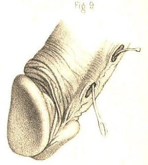

SURGICAL ANATOMY by JOSEPH MACLISE
COMMENTARY ON PLATES 57 & 58.
CONGENITAL AND PATHOLOGICAL DEFORMITIES OF THE PREPUCE AND
URETHRA.--STRICTURE AND MECHANICAL OBSTRUCTIONS OF THE URETHRA.
When any of the central organs of the body presents in a form differing
from that which we term natural, or structurally perfect and efficient,
if the deformity be one which results as a malformation, ascribable to
an error in the law of development, it is always characterized as an
excess or defect of the substance of the organ at, and in reference to,
the median line. And when any of the canals which naturally open upon
the external surface at the median line happens to deviate from its
proper position, such deviation, if it be the result of an error in the
law of development, always occurs, by an actual necessity, at the median
line. On the contrary, though deformities which are the results of
diseased action in a central organ may and do, in some instances,
simulate those which occur by an error in the process of development,
the former cannot bear a like interpretation with the latter, for those
are the effects of ever-varying circumstances, whereas these are the
effects of certain deviations in a natural process--a law, whose course
is serial, gradational, and in the sequent order of a continuous chain
of cause and effect.
Fig. 1, Plate 57, represents the prepuce in a state of congenital
phymosis. The part hypertrophied and pendent projects nearly an inch in
front of the meatus, and forms a canal, continued forwards from this
orifice. As the prepuce in such a state becomes devoid of its proper
function, and hence must be regarded, not only as a mere superfluity,
but as a cause of impediment to the generative function of the whole
organ, it should be removed by an operation.

Plate 57.--Figure 1.
Fig. 2, Plate 57, represents the prepuce in the condition of
paraphymosis following gonorrhoeal inflammation. The part appears
constricting the penis and urethra behind the corona glandis. This state
of the organ is produced in the following-mentioned way:--the prepuce,
naturally very extensible, becomes, while covering the glans, inflamed,
thickened, and its orifice contracted. It is during this state withdrawn
forcibly backwards over the glans, and in this situation, while being
itself the first cause of constriction, it induces another--namely, an
arrest to the venous circulation, which is followed by a turgescence of
the glans. In the treatment of such a case, the indication is, first, to
reduce by gradual pressure the size of the glans, so that the prepuce
may be replaced over it; secondly, to lessen the inflammation by the
ordinary means.
Plate 57.--Figure 2.
Fig. 3, Plate 57, exhibits the form of a gonorrhoeal phymosis. The
orifice of the prepuce is contracted, and the tissue of it infiltrated.
If in this state of the part, consequent upon diseased action, or in
that of Fig. 1, which is congenital, the foreskin be retracted over the
glans, a paraphymosis, like Fig. 2, will be produced.
Plate 57.--Figure 3.
Fig. 4, Plate 57, shows a form of phymosis in which the prepuce during
inflammation has become adherent to the whole surface of the glans. The
orifice of the prepuce being directly opposite the meatus, and the parts
offering no obstruction to the flow of urine, an operation for
separating the prepuce from the glans would not be required.
Plate 57.--Figure 4.
Fig. 5, Plate 57.--In this figure is represented the form of the penis
of an adult, in whom the prepuce was removed by circumcision at an early
age. The membrane covering the glans and the part which is cicatrised
becomes in these cases dry, indurated, and deprived of its special
sense.

Plate 57.--Figure 5.
Fig. 6, Plate 57.--In this figure the glans appears protruding through
the upper surface of the prepuce, which is thickened and corrugated.
This state of the parts was caused by a venereal ulceration of the upper
part of the prepuce, sufficient to allow the glans to press through the
aperture. The prepuce in this condition being superfluous, and acting as
an impediment, should be removed by operation.
Plate 57.--Figure 6.
Fig. 7, Plate 57.--In this figure is shown a condition of the glans and
prepuce resembling that last mentioned, and the effect of a similar
cause. By the removal of the prepuce when in the position here
represented, or in that of Fig. 6, the organ may be made to assume the
appearance of Fig. 5.
Plate 57.--Figure 7.
Fig. 8, Plate 57, represents the form of a congenital hypospadias. The
corpus spongiosum does not continue the canal of the urethra as far
forwards as the usual position of the meatus, but has become defective
behind the fraenum praeputii, leaving the canal open at this place. In a
case of this kind an operation on the taliacotian principle might be
tried in order to close the urethra where it presents abnormally patent.
Plate 57.--Figure 8.
Fig. 9, Plate 57, represents a congenital hypospadias, in which the
canal of the urethra opens by two distinct apertures along the under
surface of the corpus spongiosum at the middle line. A probe traverses
both apertures. In such a case, if the canal of the urethra were
perforate as far forwards as the meatus, and this latter in its normal
position, the two false openings should be closed by an operation.

Plate 57.--Figure 9.
Fig. 10, Plate 57.--The urethra is here represented as having a false
opening on its under surface behind the fraenum. The perforation was
caused by a venereal ulcer. The meatus and urethra anterior to the false
aperture remained perforate. Part of a bougie appears traversing the
false opening and the meatus. In this state of the organ an attempt
should be made to close the false aperture permanently.
Plate 57.--Figure 10.
Fig. 11, Plate 57, shows a state of the urethra similar to that of Fig.
10, and the effect of the same cause. Part of a bougie is seen
traversing the false aperture from the meatus before to the urethra
behind. In this case, as the whole substance of the corpus spongiosum
was destroyed for half an inch in extent, the taliacotian operation, by
which lost quantity is supplied, is the measure most likely to succeed
in closing the canal.
Plate 57.--Figure 11
Fig. 12, Plate 57.--Behind the meatus, and on the right of the fraenum,
is represented a perforation in the urethra, caused by a venereal ulcer.
The meatus and the false opening have approached by the contraction of
the cicatrix; in consequence of which, also, the apex of the glans is
distorted towards the urethra; a bougie introduced by the meatus
occupies the urethral canal.
Plate 57.--Figure 12.
Fig. 13, Plate 57.--In this figure the canal of the urethra appears
turning upwards and opening at the median line behind the corona
glandis. This state of the urethra was caused by a venereal ulcer
penetrating the canal from the dorsum of the penis. The proper direction
of the canal might be restored by obliterating the false passage,
provided the urethra remained perforate in the direction of the meatus.
Plate 57.--Figure 13.
Fig. 14, Plate 57, exhibits the form of a congenital epispadias, in
which the urethra is seen to open on the dorsal surface of the prepuce
at the median line. The glans appears cleft and deformed. The meatus is
deficient at its usual place. The prepuce at the dorsum is in part
deficient, and bound to the glans around the abnormal orifice.
Plate 57.--Figure 14.
Fig. 15, Plate 57, represents in section a state of the parts in which
the urethra opened externally by one fistulous aperture, a, behind the
scrotum; and by another, b,
in front of the scrotum. At the latter place
the canal beneath the penis became imperforate for an inch in extent.
Parts of catheters are seen to enter the urethra through the fistulous
openings a b; and another
instrument, c, is seen to
pass by the proper
meatus into the urethra as far as the point where this portion of the
canal fails to communicate with the other. The under part of the scrotum
presents a cleft corresponding with the situation of the scrotal septum.
This state of the urinary passage may be the effect either of congenital
deficiency or of disease. When caused by disease, the chief features in
its history, taking these in the order of their occurrence, are, 1st, a
stricture in the anterior part of the urethra; 2ndly, a rupture of this
canal behind the stricture; 3rdly, the formation (on an abscess opening
externally) of a fistulous communication between the canal and the
surface of some part of the perinaeum; 4thly, the habitual escape of the
urine by the false aperture; 5thly, the obliteration of the canal
to a
greater or less extent anterior to the stricture; 6thly, the parts
situated near the urethral fistula become so consolidated and confused
that it is difficult in some and impossible in many cases to find the
situation of the urethra, either by external examination or by means of
the catheter passed into the canal. The original seat of the stricture
becomes so masked by the surrounding disease, and the stricture itself,
even if found by any chance, is generally of so impassable a kind, that
it must be confessed there are few operations in surgery more irksome to
a looker-on than is the fruitless effort made, in such a state of the
parts, by a hand without a guide, to pass perforce a blunt pointed
instrument like a catheter into the bladder. In some instances the
stricture is slightly pervious, the urine passing in small quantity by
the meatus. In others, the stricture is rendered wholly imperforate, and
the canal either contracted or nearly obliterated anteriorly through
disuse. Of these two conditions, the first is that in which catheterism
may be tried with any reasonable hope of passing the instrument into the
bladder. In the latter state, catheterism is useless, and the only means
whereby the urethra may be rendered pervious in the proper direction is
that of incising the stricture from the perinaeum, and after passing a
catheter across the divided part into the bladder, to retain the
instrument in this situation till the wound and the fistulae heal and
close under the treatment proper for this end. (Mr. Syme.)
Plate 57.--Figure 15.
Fig. 1, Plate 58.--In this figure the urethra appears communicating with
a sac like a scrotum. A bougie is represented entering by the meatus,
traversing the upper part of the sac, and passing into the membranous
part of the urethra beyond. This case which was owing to a congenital
malformation of the urethra, exhibits a dilatation of the canal such as
might be produced behind a stricture wherever situated. The urine
impelled forcibly by the whole action of the abdominal muscles against
the obstructing part dilates the urethra behind the stricture, and by a
repetition of such force the part gradually yields more and more, till
it attains a very large size, and protrudes at the perinaeum as a
distinct fluctuating tumour, every time that an effort is made to void
the bladder. If the stricture in such a case happen to cause a complete
retention of urine, and that a catheter cannot be passed into the
bladder, the tumour should be punctured prior to taking measures for the
removal of the stricture. (Sir B. Brodie.)
Plate 58.--Figure 1.
Fig. 2, Plate 58, represents two close strictures of the urethra, one of
which is situated at the bulb, and the other at the adjoining membranous
part. These are the two situations in which strictures of the organic
kind are said most frequently to occur, (Hunter, Home, Cooper, Brodie,
Phillips, Velpeau.) False passages likewise are mentioned as more liable
to be made in these places than elsewhere in the urethral canal. These
occurrences--the disease and the accident--would seem to follow each
other closely, like cause and consequence. The frequency with which
false passages occur in this situation appears to me to be chiefly owing
to the anatomical fact, that the urethra at and close to the bulb is the
most dependent part of the curve, F K, Fig. 1, Plate 56; and hence, that
instruments descending to this part from before push forcibly against
the urethra, and are more apt to protrude through it than to have their
points turned so as to ascend the curve towards the neck of the bladder.
If it be also true that strictures happen here more frequently than
elsewhere, this circumstance will of course favour the accident. An
additional cause why the catheter happens to be frequently arrested at
this situation and to perforate the canal, is owing to the fact, that
the triangular ligament is liable to oppose it, the urethral opening in
this structure not happening to coincide with the direction of the point
of the instrument. In the figure, part of a bougie traverses the urethra
through both strictures and lodges upon the enlarged prostate. Another
instrument, after entering the first stricture, occupies a false passage
which was made in the canal between the two constricted parts.

Plate 58.--Figure 2.
Fig. 3, Plate 58.--A calculus is here represented lodging in the urethra
at the bulb. The walls of the urethra around the calculus appear
thickened. Behind the obstructing body the canal has become dilated,
and, in front of it, contracted. In some instances the calculus presents
a perforation through its centre, by which the urine escapes. In others,
the urine makes its exit between the calculus and the side of the
urethra, which it dilates. In this latter way the foreign body becomes
loosened in the canal and gradually pushed forwards as far as the
meatus, within which, owing to the narrowness of this aperture, it
lodges permanently. If the calculus forms a complete obstruction to the
passage of the urine, and its removal cannot be effected by other means,
an incision should be made to effect this object.
Plate 58.--Figure 3.
Fig. 4, Plate 58, represents the neck of the bladder and neighbouring
part of the urethra of an ox, in which a polypous growth is seen
attached by a long pedicle to the veru montanum and blocking up the neck
of the bladder. Small irregular tubercles of organized lymph, and
tumours formed by the lacunae distended by their own secretion, their
orifices being closed by inflammation, are also found to obstruct the
urethral canal.
Plate 58.--Figure 4.
Fig. 5, Plate 58.--In this figure is represented a small calculus
impacted in and dilating the membranous part of the urethra.
Plate 58.--Figure 5.
Fig. 6, Plate 58.--Two strictures are here shown to exist in the
urethra, one of which is situated immediately in front of the bulb, and
the other at a point midway between the bulb and the meatus.
Plate 58.--Figure 6.
Fig. 7, Plate 58.--A stricture is here shown situated at the bulb.
Plate 58.--Figure 7.
Fig. 8, Plate 58, represents a stricture of the canal in front of the
bulb.
Plate 58.--Figure 8.
Fig. 9, Plate 58, represents the form of an old callous stricture half
an inch long, situated midway between the bulb and the meatus. This is
perhaps the most common site in which a stricture of this kind is found
to exist. In some instances of old neglected cases the corpus spongiosum
appears converted into a thick gristly cartilaginous mass, several
inches in extent, the passage
here being very much contracted, and
chiefly so at the middle of the stricture. When it becomes impossible to
dilate or pass the canal of such a stricture by the ordinary means, it
is recommended to divide the part by the lancetted stilette. (Stafford.)
Division of the stricture, by any means, is no doubt the readiest and
most effectual measure that can be adopted, provided we know clearly
that the cutting instrument engages fairly the part to be divided. But
this is a knowledge less likely to be attained if the stricture be
situated behind than in front of the triangular ligament.
Plate 58.--Figure 9.
Fig. 10, Plate 58, exhibits a lateral view of the muscular parts which
surround the membranous portion of the urethra and the prostate; a, the
membranous urethra embraced by the compressor urethrae muscle; b, the
levator prostatae muscle; c,
the prostate; d, the anterior
ligament of
the bladder.
Plate 58.--Figure 10.
Fig. 11, Plate 58.--A posterior view of the parts seen in Fig. 10; a,
the urethra divided in front of the prostate; b b, the levator prostatae
muscle; c c, the compressor
urethrae; d d, parts of the
obturator
muscles; e e, the anterior
fibres of the levator ani muscle; f g,
the
triangular ligament enclosing between its layers the artery of the bulb,
Cowper's glands, the membranous urethra, and the muscular parts
surrounding this portion of the canal. The fact that the flow of urine
through the urethra happens occasionally to be suddenly arrested, and
this circumstance contrasted with the opposite fact that the organic
stricture is of slow formation,
originated the idea that the former
occurrence arose from a spasmodic muscular contraction. By many this
spasm was supposed to be due
to the urethra being itself muscular. By
others, it was demonstrated as
being dependent upon the muscles which
surround the membranous part of the urethra, and which act upon this
part and constrict it. From my own observations I have formed the
settled opinion that the urethra itself is not muscular. And though, on
the one hand, I believe that this canal, per se, never causes by active
contraction the spasmodic form of stricture, I am far from supposing, on
the other, that all sudden
arrests to the passage of urine through the
urethra are solely attributable to spasm of the muscles which embrace
this canal.

Plate 58.--Figure 11.
COMMENTARY ON PLATES 59
& 60